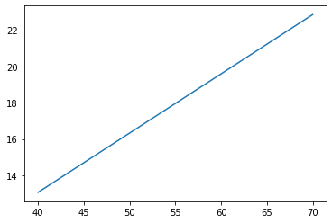
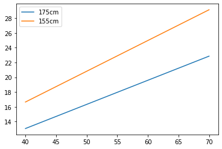
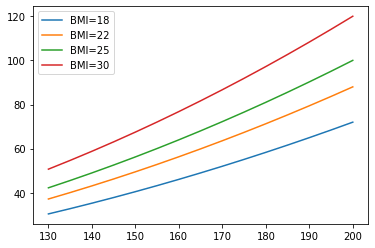

Python 入門#
本ノートは、Python未経験者であっても データ分析やAI開発を体験するために 最低限のPython力を習得するための サバイバルガイド です。
はじめのプログラム#
Hello Worldは、プログラミングを学ぶ人がみんな最初に 書いてきた伝統のプログラムです。
まず、通過儀礼として、Hello Worldを書いてみて、実行してみましょう。
Colab上では、実行セルにコードを書いて、実行ボタンを押すことで、実行結果を表示することができます

次に進む前に#
最低限、文字列、数値、変数名の区別を付けましょう。
BMIを計算しよう#
BMI(ボディマス指数)は、次の式で求められる肥満度を表す体格指数です。

ここでは、BMIを計算するプログラムを書きながら練習していきます。
変数#
変数は、プログラミング中で用いるデータや値に名前を付けて利用できるようにします。
次は、変数xの値を1にしています。「xに1を代入する」とも呼びます。
値にxという名前をつけたので、今後はxという名前を用いてその値を利用できるようになります。
次は、数式に変数を使ってみた例です。
BMI を計算するために、身長と体重の変数を定義しましょう。
変数名
プログラミングの変数名は、他の人が読んでも誤解することなく わかりやすい名前 を付けます。数学のように1文字である必要はありません。慣習的に、英単語を用いることが推奨されます。
英単語を覚えつつ、英語変数名にするがおすすめです。計算してみる#
身長と体重を変数で与えて、BMIを計算するプログラムを書いてみよう。 BMIの計算結果は、変数として名前をつけておきましょう。
Pythonは、数式を計算するとき、 中学校から習ってきた数式をほぼそのまま使えるようになっています。違いに注意して計算してみましょう。
| 数式 | Python | 説明 |
|---|---|---|
x + y |
x に y を足した値(加算) | |
x - y |
x から y を引いた値(減算) | |
x * y |
x に y を掛けた値 (乗算) | |
x ** y |
x の y 乗（冪乗） | |
x / y |
x を y で割った値 | |
x // y |
x を y で割った商（小数点以下切り捨て) | |
(x+y-1)//y |
x / yの切り上げ | |
x % y |
x を y で割った余り |
練習問題1
BMIが22になるときの体重が標準体重で、最も病気になりにくい状態です。次のように、身長(cm)を入力してもらい、標準体重を計算してあげましょう。
肥満かどうか判定する#
身長と体重からBMIが計算できるようになりました。
BMIは、日本肥満学会によると、次のような基準で肥満がどうか判定できます。
| BMI | 判定 |
|---|---|
| <18.5 | 低体重 |
| 18.5≦ ~ <25 | 普通体重 |
| 25≦ ~ | 肥満 |
身長や体重から肥満を判定するプログラムを作ってみましょう。
条件分岐#
条件分岐は、データや値の条件によってプログラムの動作を変えるプログラムの書き方です。
次のようなif文と呼ばれる制御構造を書きます。
まず、「肥満」かそうでないか判定するプログラムを書いてみましょう。 BMIは計算済みであるとすると：
if文による条件分岐は、難しくありません。 ただし、分岐先のコードを区別するため、 先頭にインデント（字下げされた空白４文字）が必要になります。
TABキー
TABキーを押すと、空白4文字入ります。 インデントは、空白４文字でなくても構いませんが、必ずTABキーで入れるようにしましょう。
if文は、組み合わせて書くことができます。 つまり、分岐先の中にもif文を書くことができます。 この場合は、インデントを入れ子状にネストして書きます。
インデントを深くして２つを組み合わせると:
elif は、
else の中でifで始まるときの特別な書き方です。
elifを使えば、インデントが深くなるのを避けられます。
Let's try
身長と体重からBMIを計算する部分と組み合わせて、プログラムを完成させましょう。
モデルと関数#
BMIによる肥満判定モデルを定義しましょう。
- 入力: 体重(w), 身長(h)
- 出力: 3クラス(低体重, 普通体重, 肥満)
def BMIModel(w, h):
BMI = w / h ** 2
if BMI >= 25.0 :
return "肥満"
elif 18.5 <= BMI < 25.0 :
return "普通体重"
else:
return "低体重"
繰り返しとデータ列#
繰り返しは、チューリング完全性と停止性に関連するので、プログラミング初学者にとって最初の壁になりやすい部分です。
データ分析やAIでは、データ列に対して繰り返し処理する作業は頻出です。ここでは、データ列に対する繰り返し処理に焦点を当てて理解します。
データ列#
Python では、データ列を扱うデータ構造として、リストが用意されています。
このようにデータ列が定義されたら、 for文はデータ列の値を先頭から順番に一つずつ変数に代入して、 実行する制御構造です。
次は、data の値を変数xにひとつずつ代入し、 それを繰り返しています。
プログラミングでは、データ列の処理結果をデータ列として扱えた方が便利なことも多いです。そのようなときは、空のデータ列を作り、処理結果を追加することで、データ列を作ります。
標準体重のデータ列#
ある身長(例えば自分の身長）に対し、体重のデータ列(weights)を変化させて、BMIを計算してみます。
40 13.061224489795919
45 14.693877551020408
50 16.3265306122449
55 17.959183673469386
60 19.591836734693878
65 21.224489795918366
70 22.857142857142858
練習問題
標準体重は、BMIが22のときの体重で、最も生活習慣病になりにくい体重と言われています。 次の身長のデータ列(heights)に対する標準体重を求めてみよう。
データ列のグラフ描画#
体重のデータ列からBMIを計算する方法を学んでみました。 計算したBMIを表示する代わりにデータ列に格納し、 グラフに表示する方法をみていきましょう。
h = 1.75
weights = [40, 45, 50, 55, 60, 65, 70]
for w in weights:
BMI = w / (h**2)
print(w, BMI)
h = 1.75
weights = [40, 45, 50, 55, 60, 65, 70]
BMI175 = []
for w in weights:
BMI = w / (h**2)
BMI175.append(BMI)
print(BMI175)
[13.061224489795919, 14.693877551020408, 16.3265306122449, 17.959183673469386, 19.591836734693878, 21.224489795918366, 22.857142857142858]
データ列は、グラフ化すると、視覚的にみやすく、特徴が理解しやすくなります。
Matplotlib#
Matplotlib は、NumPy配列などを描画する定番のライブラリです。 論文出版に耐えうる高品質なグラフが作画できます。
今から、体重のデータ列(weights)をX軸に、BMI(BMI175)のデータ列をY軸にしてグラフに描画します。
Let's try
身長155cmの人のBMIを体重ごとに計算してグラフ化してみよう。

(できたら、身長175cmと同時に表示しよう。）
練習問題
身長130cmから200cmまで5cm間隔でx軸にとり、 BMI=18,22,25,30のときの体重をy軸にプロットしたグラフを書いてみよう。

卒業: FizzBuzz ゲーム#
データ分析や機械学習を体験するために 最低限のPython力を習得するための入門編はおしまいです。次回からデータ分析、機械学習に取り組んでいきます。
最後に、昔からプログラミング力があるか試されるFizzBuzzテストのプログラムに挑戦してみましょう。
FizzBuzzゲーム
アメリカのパーティゲーム、順番に1,2,3,...と100まで数えます。そのとき、3の倍数のときはFizz、5の倍数のときはBuzz, ３と5の倍数のときはFizzBuzz と言わなければなりません。（それ以外は数字を発言します。）
1から100まで、FizzBuzzを表示するプログラムを書いてみよう。